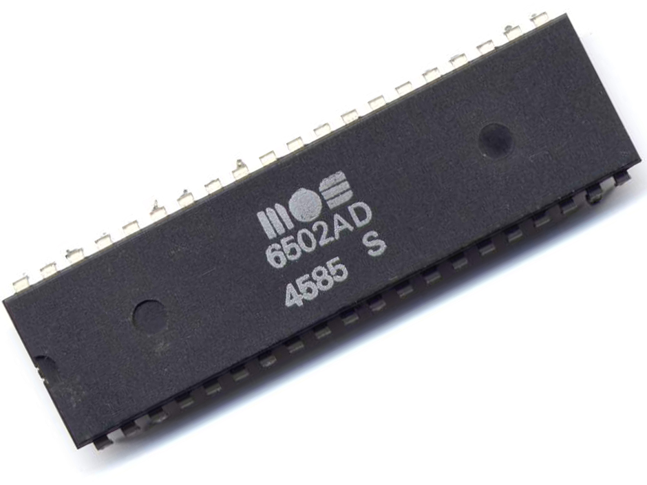
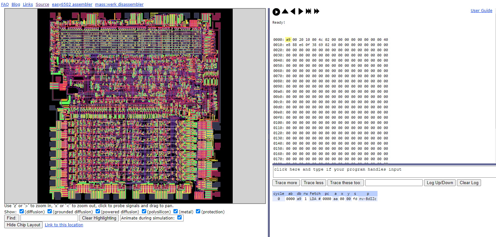

The MOS 6502 8-bit microprocessor was the least expensive microprocessor on the market by a considerable margin when it was introduced in 1975. It sparked a series of projects that resulted in the home computer revolution of the early 1980s. My introduction to the 6502 came when I was 10 years old, in 1983, I received a Commodore VIC 20 for Christmas. That VIC 20 ignited a passion for programming in me that I still have today, almost 40 years later.
Here recently I have developed a bit a nostalgia for the 8-bit computing days and decided to write a 6502 emulator in JavaScript. My first goal was to just write an emulator good enough load the Commodore VIC 20 kernel and basic ROMs and be able to step the execution to see how they work. Below is a demo of that project.
My next goal was to improve my emulator to support input via keyboard and to show video output. To achieve this goal I am going to need to improve the performance of my emulator and I thought I would also use this as an excuse to learn the true cycle timing of the 6502 instruction set.
Update September 2022: This project was been dormant for some tme. I have recently started working on it again and pushed my emulator source code to github and hosted a live demo page.
During my research, I found Garth Wilson's 6502 PRIMER: Building your own 6502 computer website. In his section on memory map requirements, he discuses why little endian or low byte first, memory access allows the processor to run faster. The following is from Garth Wilson's page.
Low Byte First
By the way, in two-byte values, the low byte is always first. This is called "little endian." It may seem backwards, but it allows the processor to run faster. (It has nothing to do with even and odd addresses. A two-byte value can start with the low byte on an even or an odd address, and the high byte will follow, regardless.) While reading the next byte after an op code, the processor can simultaneously be decoding the op code and determining if that next byte is the next op code, the first of two operand bytes, or the only byte of a one-byte operand. If indexing is required, the addition can begin taking place on the low operand byte (which is where you start the addition anyway), regardless of whether there's a high operand byte still to come.
Take for example the instruction LDA $684A,X. The processor reads the op code in the first clock period, and the $4A low byte in the second. Now in the third, while it is reading the $68 high byte, it can simultaneously be adding the X register's value to the $4A low byte. It would have to wait and waste another clock period if the high byte were first. If the first addition generated a carry, it gets added into the high byte in the next clock period; otherwise that next clock period is used for fetching the value from the resulting address, meaning the whole absolute indexed load-accumulator instruction took only four clocks.
It's part of the pipelining scheme whereby the 6502 does more than one thing per clock period. Take another example, addition of a constant to the accumulator, like ADC #51. This requires five operations: 1. fetch op code; 2. interpret op code; 3. get operand; 4. add the operand and the accumulator's contents; and 5. store the result in the accumulator. The 6502 does the five steps in only two clock periods (2 microseconds at 1MHz). Op code interpretation (step 2) happens while the operand is being fetched (step 3). Steps 4 and 5 (doing the addition and putting the result in the accumulator) happen while the processor is getting the next instruction op code.
I found this very interesting and it motivated me to create the 6502 Interactive Block Diagram so that I could "see" exactly how the processor executed ADC #51 instruction. If I was going to create an accurate tool to show 6502 instruction execution I was going to need to do some research. It seemed the best source of truth for 6502 instruction execution is visual6502.org.
Visual6502.org
Visual 6502 is a complete digital model and transistor-level simulation of the 6502 chip. This model is very accurate and can run classic 6502 programs, including Atari games. The advanced page allows you to watch the value of any transistor that make up the internal registers and buses of the 6502. But you have to understand how to use it and I found it to be a better of challenge to found a simple source that explained it all. I will try and give an overview of what I have learned show far and how I used it to study exactly how the processor executed ADC #51 instruction.

The advance pages displays the visual transistor simulator to the left. Memory is displayed in the top right with a set of buttons used to control the simulator. The most interesting part is trace section located on the bottom right. This section can tabulate the state of the machine, and any signals of interest, phase by phase or instruction by instruction. I normally click the "Hide Chip Layout" button since I am focusing on the logical behavior and not the chip layout.
Modifying the program
In order to examine the 6502 processing an instruction we need to place our instructions, or program, into memory. There are two ways to modify the memory used by the simulator:
- interactively, you can click on the memory map and change the content of each location. The memory map is in the top right-hand pane, below the table showing the machine state and the buttons controlling the simulator.
- in the URL, you can use a= and d= to patch any addresses with data. So ...&a=400&d=eaea&... would put a couple of NOPs at $0400. Use the same technique if you wish to adjust the vectors at the top of memory. You can load quite long programs this way (in several sections, usually.)
Tracing machine state
Once we have our program in memory, next we need to trace the machine state to see what is happening in the 6502. The lower right pane offers some means of tracing signals of interest:
- Trace More will add some pre-defined sets of signals to the tabulation
- Trace Less removes those sets in the same order
- Trace these too: allows for a list of signals to be added to the tabulation
- Log Up/Down allows for the tabulation to act in reverse order if you prefer not to keep scrolling to the bottom.
- Clear Log acts in the obvious way
Busses and signals of interest
You can use the 'Trace these too' box to list more signals which you're interested in - you might even use 'Trace less' several times to make this the exact list of signals to tabulate. Some names are handled specially and are not individual signals or busses:
- cycle: count of cycles since reset
- Execute: description of the 6502 opcode in the ir (Instruction Register)
- State: more readable version of tcstate, which names the low bits, from T0 to T5.
- clk1out: phi1 clock signal
- clk2out: phi2 clock signal
- -pd: predecode register
- db: data bus
- idl: input data latch
- idb: internal bus: data bus
- ir: instruction register
- pc: program counter, combining pcl and pch
- alu: alu output
- sb: special bus
- dor: data output register
- p: status register, combining p0 to p7 (there is no p5, and p1 and p2 are probed away from the other P signals)
- tcstate: collects the timing control bits, which are labelled 'clock1','clock2','t2','t3','t4','t5'
- Fetch: is blank unless the 'sync' pin is active, in which case it is a description of the 6502 opcode on the data bus (db).
- plaOutputs: list of all the active outputs from the instruction decode PLA
- DPControl: list of all the active control signals into the datapath
- dpc43_DL/DB: signal to enable DB bus to input data latch
- dpc23_SBAC: signal to load accumulator from special data bus
- dpc25_SBDB: signal to connect data bus and special data bus
- clk0: phi2 clock input
- a: A Register
- x: X Register
- y: Y Register
- s: S Register
If you need to tabulate a signal which is in negative sense, use a leading minus. For example, '-pd' is the instruction predecode register. A list of signal or node names can be found in nodenames.js source file. The signal names are mostly taken from Donald Hanson's block diagram. I also found 6502 datapath wiki page useful to understanding nodes and signals.